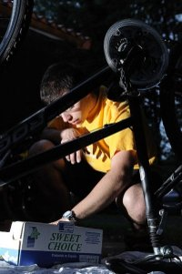

About me
 My name is Filip Sedlák. You can contact me at sedlakf@gmail.com.
I'm currently studying cheminformatics at VŠCHT Praha - Laboratory of Informatics. My interest lies mostly at software design, especially communicating with client about his needs. Thanks to my course of study, I also understand some chemistry and I've passed four semestral courses in the chemical lab.
At my school website, you can find updates on my school projects, including my Bs. thesis. However, the site is mostly in czech language.
Currently, I'm working on my master thesis - Mapping of Chemical Space. I'm developing an application visualising "libraries" of chemical molecules. This work is carried out for Institute of Molecular Genetics
My current work
Instant JChem (2012 - Current)
For ChemAxon, contributing to a chemically inteligent tool for managing data. Connects to existing databases at world's top pharmaceutial companies and allows to search, save, combine and upload data. Also provides access to almost whole portfolio of cheminformatics functionality provided by ChemAxon.
My previous work
XMR GUI (2011)
Graphical user interface for XMR software. That program performs a simulation of catalytic converters [1]. The GUI is made with GWT to be able to run simulations remotely on different servers without the need of client installation. This is very good for quick introduction of new students to this software's usage. I was a member of team of three developers under the excellent lead of Míra Šimek.
Space cartographer (2010 - 2012)
Development of dynamic web application for navigation across the chemical space. The chemical compounds can be put into a mutlidimensionary space and reports from this space can give useful insights during drug discovery process. For more info, see the slides from thesis defense (in Czech).
The challenging part here was to integrate existing Python, Java and R code in a web application. Did you know the CDK's descriptor calculators are not at all thread safe and you can't interrupt the computation if it takes too long?
This was my MSc thesis under the lead of assoc. prof. Dan Svozil (head of cheminformatics laboratory @ ICT).
Knime reporting for IMG (2010)
Before the KNIME reporting extension came out, we started a project to create reports from the KNIME workflows. This got to a stage where several nodes were developed which were able to produce an HTML page with data from the workflow.
However, since the beginning, KNIME was used in that lab mostly as an inerface to R scripts. It did not gain much popularity among the scientists there, so it was replaced with combination of Python and R.
Structural analysis of DNA-protein interface (2010)
As a BS thesis, I processed publicly available crystallography data to find statistically significant patterns in binding between DNA and proteins, including H and water-mediated bonds.